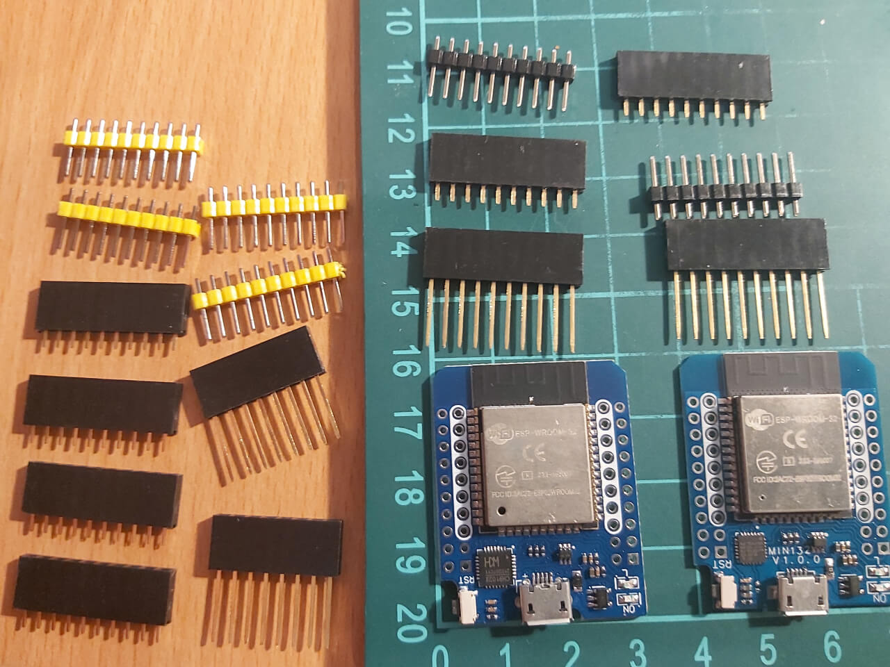

В качестве светодиодного драйвера могут быть использованы как несколько вариантов плат, так и несколько вариантов их подключения. На данный момент автором HyperHDR реализован высокоскоростной драйвер последовательного порта Adalight для плат ESP32 / Esp8266 / Raspberry Pi Pico RP2040. Также реализованы несколько способов подключения: Wled (Wi-Fi), порт Usb и мост SPI. Со всеми способами вы можете ознакомиться в репозитории автора (ссылка). Для каждого драйвера описан процесс установки ПО и рекомендуемые автором платы для покупки (остерегайтесь подделок и смотрите на отзывы о товаре на странице магазина).
HyperSerialWLED - беспроводное соединение, есть небольшая задержка.
HyperSerialEsp8266 / HyperSerialESP32 / HyperSerialPico - проводное USB-соединение.
Меньшая задержка по сравнению с WLED.
Рекомендуется использовать, когда от Raspberry Pi до микроконтроллера большое расстояние.
HyperSPI - подключение с помощью перемычек Dupont. Наименьшая задержка.
Рекомендуется, если расстояние от Raspberry Pi до микроконтроллера составляет 15-20 см.
Мой выбор это подключение по мосту SPI, плата была приобретена "ESP32 MH-ET Live" с микросхемой "CH9102X" (ссылка)

Переключатель уровня 3,3 В является обязательной частью решения, в котором устройство GPIO 3,3 В, такое как Raspberry Pi или ESP32 / Esp8266 / Raspberry Pi Pico RP2040, взаимодействует со светодиодной лентой 5 В. Переключатель выполнен на основе микросхемы SN74AHCT125N (ссылка)
Макетные печатные платы относятся к универсальными и незаменимыми элементами с целью быстрой сборки схем без необходимости изготовления собственной печатной платы (что усложняет сам проект). Для дальнейшей сборки полойдет макетная плата с размерами 3x7 см (ссылка). Я решил пойти не совсем нестандартным путем, вы можете этого не делать. Мной была куплена более крупная плата и укорочена со всех сторон до необходимого мне размера (с обработкой торцов).
Кроме самой макетной платы нам необходимы дополнительные элементы:
- гнездо IDC (тип "Мама") (ссылка),
- гнездо на плату прямое (10 pin, тип "Мама") (ссылка),
- вилка штыревая 2.54мм (тип "Папа") (ссылка),
- перемычка Dupont (тип "Мама-Мама") (ссылка).